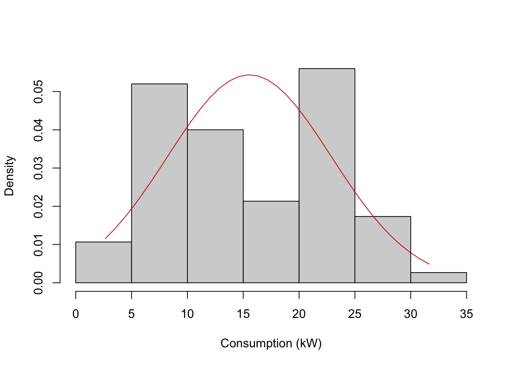
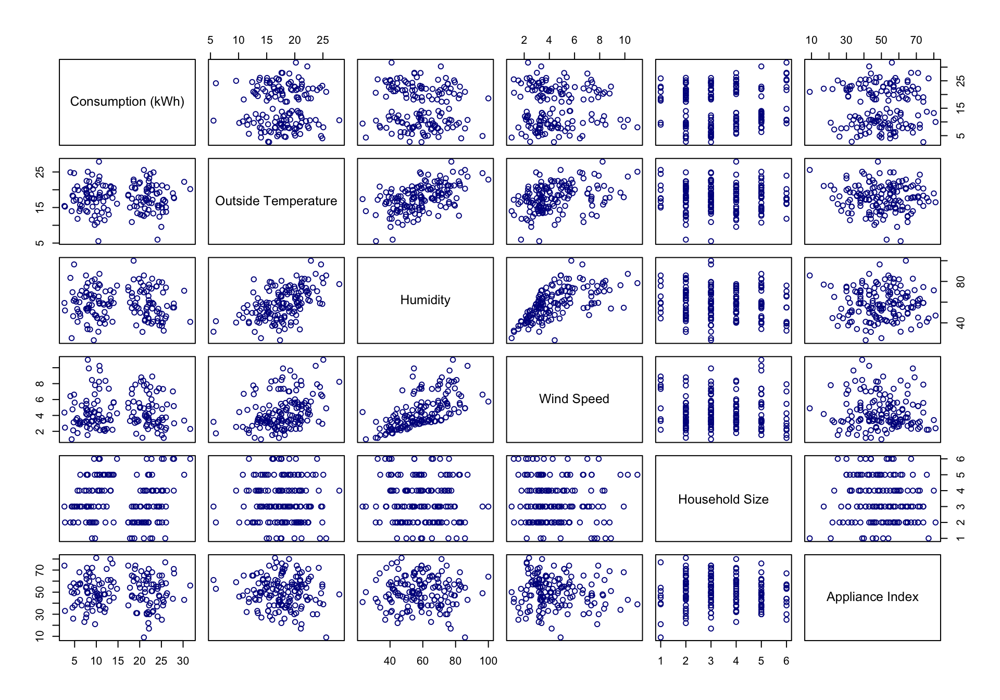

STA2005S Assignment 1
Part One
Section 1:
Household consumption of electricity is a major stressor on the South African power grid. The aim of this statistical analysis is to determine whether there are statistically significant effects of various variables including temperature, humidity, wind, household size, appliance intensity, energy efficiency rating, whether the household has solar power, the day of the week and whether the day is a public holiday on the daily household electricity consumption and the size of these effects. This is to hopefully draw meaningful conclusions about what the major influences on household electricity consumption are and to prompt efficient policy-making.
The analytical approach this assignment will take is that of simple and multiple linear regression to determine relationships between explanatory variables and the response variable as well as various graphical analyses of the data.
The nature of this analysis is primarily explanatory as the aim is to draw conclusions about which factors influence consumption, not predict future consumption based off of the effects of these variables.
Section 2:
1. Density plots
The unstratified histogram does not mimic the shape of the overlaid normal curve which suggests that some households consume less electricity and some households consume more. The histogram appears to be almost bimodal in shape, with two peaks that are spaced quite far apart, suggesting that if stratified under a certain binomial condition, the distribution could more closely resemble the shape of the normal curve.

When the histogram is stratified with solar installation being true, the histogram follows the normal curve more closely. The distribution is left skewed and shows that solar installation results in lower mean consumption, explaining the first peak of the unstratified histogram. When the histogram is stratified with solar installation being false, the histogram follows the normal density curve more closely than the unstratified histogram. The distribution is right skewed, showing higher mean consumption than when solar is installed and explaining the second peak. Clearly, stratifying the histogram of consumption with solar installation shows that households with solar had a significantly lower energy consumption on average than those without, and explains the shape of the unstratified histogram.
2. Pairwise plots

3. Categorical variable plots


4. Categorical Relationships
| No | Yes | |
|---|---|---|
| Poor | 16 | 12 |
| Average | 28 | 31 |
| Good | 22 | 24 |
| Excellent | 8 | 9 |
| No | Yes | |
|---|---|---|
| Monday | 31 | 5 |
| Tuesday | 18 | 0 |
| Wednesday | 17 | 1 |
| Thursday | 19 | 0 |
| Friday | 18 | 0 |
| Saturday | 13 | 0 |
| Sunday | 28 | 0 |
Section 3:
1. Model Fitting:
A linear model will be fit of consumption against outside temperature from first principles. The results are displayed below.
Click here to display calculations
# Fitting linear model of consumption_kwh against outside_temperature from first principles
# Constructing design matrix and Y matrix of observations
X <- model.matrix(en_dat$consumption_kwh ~ en_dat$outside_temperature)
Y <- en_dat$consumption_kwh
# MLE of Beta
bhat_c <- solve((t(X) %*% X)) %*% t(X) %*% Y
#Calculating std. errors
y_fitted <- X %*% bhat_c
y_resid <- Y - y_fitted
n <- length(Y)
p <- ncol(X)
# calculating s^2
sig_hat <- as.numeric(1/(n-p) * t(y_resid) %*% y_resid)
var_bhat_c <- sig_hat * solve((t(X) %*% X))
se_bhat_c <- sqrt(diag(var_bhat_c))
# Calculating t-values
t_vals <- bhat_c / se_bhat_c
# Calculating p-values
df <- n-p
p_vals <- 2 * pt(-abs(t_vals), df)
# Residual Standard Error
sse <- sum((y_resid)^2)
mse <- sse/(n-2)
residual_std_error <- sqrt(mse) |> signif(3)
# R squared
sst <- sum((Y-mean(Y))^2)
r_squared <- 1 - (sse/sst)
# Adjusted R squared
adj_r_squared <- 1 - ((1-r_squared)*(n-1)/(n-2))
# F Statistic
f_stat <- (sst-sse/(1))/(sse/(n-2))
# p-value of F statistic
f_p_val <- pf(f_stat, 1, n-2, lower.tail = FALSE) |> signif(4)
# Collecting all results into data frames
results1 <- tibble(
Coefficients = c("(Intercept)", "Outside Temperature"),
Estimate = as.vector(bhat_c) |> signif(3),
Std_Error = se_bhat_c |> signif(3),
t_vals = as.vector(t_vals) |> signif(5),
p_vals = as.vector(p_vals) |> signif(3))
results2 <- tibble(
results = c("Residual Standard Error", "R squared", "Adjusted R squared", "F statistic"),
value = c(residual_std_error |> signif(3), scientific(r_squared, 3), scientific(adj_r_squared, 3), f_stat |> signif(4)),
d_o_f = c(n, "N/A", "N/A", "1 and 148"),
p_val = c( "N/A", "N/A", "N/A", f_p_val),
)
# Displaying the results
kable(results1, caption = "Linear Model of consumption (kWh) against outside temperature from first principles", rownames = FALSE, col.names = c("Coefficients", "Estimate", "Standard Error", "t values", "Pr(>|t|)"))| Coefficients | Estimate | Standard Error | t values | Pr(>|t|) |
|---|---|---|---|---|
| (Intercept) | 16.0000 | 2.870 | 5.58230 | 1.00e-07 |
| Outside Temperature | -0.0262 | 0.158 | -0.16565 | 8.69e-01 |
Click here to display calculations
kable(results2, rownames = FALSE, col.names = c("Results", "Value", "Degrees of Freedom", "p-value"))| Results | Value | Degrees of Freedom | p-value |
|---|---|---|---|
| Residual Standard Error | 7.36 | 150 | N/A |
| R squared | 1.85e-04 | N/A | N/A |
| Adjusted R squared | -6.57e-03 | N/A | N/A |
| F statistic | 0.02744 | 1 and 148 | 0.8687 |
2. Simultaneous hypothesis test
A simultaneous hypothesis test will be performed of the effect of energy efficiency on electricity consumption with the following hypotheses.
\(H_0: \mu_{poor} = \mu_{average} = \mu_{good} = \mu_{excellent}\) \(H_1:\) at least one \(\mu_{i}\) is different
Click here to display calculations
# Simultaneous hypothesis test for the effect of energy efficiency on electricity consumption
# Testing at 5% significance
# H0: μ_poor = μ_average = μ_good = μ_excellent
# H1: at least one μ is different
Y <- en_dat$consumption_kwh
n <- length(Y)
k <- 4 # no. energy efficiency groups
y_bar <- mean(Y)
# Between group sum-sqrs
## Poor
ind_poor <- en_dat$energy_efficiency == "Poor"
y_poor <- mean(Y[ind_poor])
n_poor <- sum(ind_poor)
ss_poor <- n_poor * (y_poor - y_bar)^2
## Average
ind_ave <- en_dat$energy_efficiency == "Average"
y_ave <- mean(Y[ind_ave])
n_ave <- sum(ind_ave)
ss_ave <- n_ave * (y_ave - y_bar)^2
## Good
ind_good <- en_dat$energy_efficiency == "Good"
y_good <- mean(Y[ind_good])
n_good <- sum(ind_good)
ss_good <- n_good * (y_good - y_bar)^2
## Excellent
ind_exc <- en_dat$energy_efficiency == "Excellent"
y_exc <- mean(Y[ind_exc])
n_exc <- sum(ind_exc)
ss_exc <- n_exc * (y_exc - y_bar)^2
ss_between <- ss_poor + ss_ave + ss_good + ss_exc
# Within-group sum sqrs
ss_within_poor <- sum((Y[ind_poor] - y_poor)^2)
ss_within_ave <- sum((Y[ind_ave] - y_ave)^2)
ss_within_good <- sum((Y[ind_good] - y_good)^2)
ss_within_exc <- sum((Y[ind_exc] - y_exc)^2)
ss_within <- ss_within_poor + ss_within_ave + ss_within_good + ss_within_exc
# Test stat
df_b <- k-1
df_w <- n-k
f_stat <- (ss_between/(df_b)) / (ss_within/(df_w))
p_val <- pf(f_stat, df_b, df_w, lower.tail = FALSE)
hyp_test <- tibble(
ss_between |> signif(3),
((ss_between)/(df_b)) |> signif(3),
ss_within |> signif(3),
((ss_within)/df_w) |> signif(3),
f_stat |> signif(5),
p_val |> signif(4))
kable(hyp_test, rownames = FALSE, col.names = c("SSA", "MSA", "SSE", "MSE", "F-statistic", "p-value"), caption = "Hypothesis test results from first principles")| SSA | MSA | SSE | MSE | F-statistic | p-value |
|---|---|---|---|---|---|
| 55.6 | 18.5 | 7960 | 54.6 | 0.3396 | 0.7967 |
Section 4:
1. Fit Model
A full model was fitted and various results are tabulated below.
Click to display code
full_model <- lm(consumption_kwh ~ outside_temperature + humidity + wind_speed + household_size + appliance_index + energy_efficiency + solar_installed + day_of_week + holiday + outside_temperature:humidity, en_dat)
full_model_summary <- summary(full_model)
confidence_ints <- confint(full_model)
lbs <- confidence_ints[1:18] |> signif(4)
ubs <- confidence_ints[19:36] |> signif(4)| Coefficient | Estimate | Lower bound | Upper bound | p-value |
|---|---|---|---|---|
| (Intercept) | 15.620000 | 7.82000 | 23.4000 | 1.20e-04 |
| Outside temperature | 0.241800 | -0.19300 | 0.6760 | 2.73e-01 |
| Humidity | 0.009802 | -0.12900 | 0.1490 | 8.89e-01 |
| Wind speed | 0.141000 | -0.13100 | 0.4130 | 3.07e-01 |
| Household size | 1.044000 | 0.71800 | 1.3700 | 3.35e-09 |
| Appliance index | 0.010640 | -0.02080 | 0.0421 | 5.05e-01 |
| Energy efficiency (Average) | -0.189500 | -1.33000 | 0.9500 | 7.43e-01 |
| Energy efficiency (Good) | -0.824100 | -1.78000 | 0.1280 | 8.93e-02 |
| Energy efficiency (Excellent) | 0.246100 | -0.54500 | 1.0400 | 5.40e-01 |
| Solar installed (Yes) | -13.740000 | -14.60000 | -12.9000 | 4.84e-62 |
| Day of week (Tuesday) | -0.017560 | -1.16000 | 1.1200 | 9.76e-01 |
| Day of week (Wednesday) | 1.506000 | 0.42900 | 2.5800 | 6.48e-03 |
| Day of week (Thursday) | -0.648600 | -1.87000 | 0.5750 | 2.96e-01 |
| Day of week (Friday) | -0.363700 | -1.62000 | 0.8980 | 5.70e-01 |
| Day of week (Saturday) | -1.202000 | -2.49000 | 0.0909 | 6.82e-02 |
| Day of week (Sunday) | -0.121800 | -1.41000 | 1.1700 | 8.52e-01 |
| Holiday | -0.257300 | -2.55000 | 2.0300 | 8.25e-01 |
| Interaction term (outside temperature against humidity) | -0.002790 | -0.00998 | 0.0044 | 4.44e-01 |
Hypothesis tests of the effects of various explanatory variables on electricity consumption have been performed and the results are displayed below. The hypotheses for these test take the form: \[H_0: \beta_{i} = 0\] \[H_1: \beta_{i}\neq0\]
Code
##| results: "hide"
#| code-summary: "Click to display code"
# Outside Temperature
red_model_temp <- update(full_model, .~. - outside_temperature, data = en_dat)
anova(red_model_temp, full_model)
outside_temp_test <- anova(red_model_temp, full_model)
# Humidity
red_model_hum <- update(full_model, .~. - humidity, data = en_dat)
anova(red_model_hum, full_model)
humidity_test <- anova(red_model_hum, full_model)
# Energy Efficiency
red_model_eff <- update(full_model, .~. - energy_efficiency, data = en_dat)
anova(red_model_eff, full_model)
energy_eff_test <- anova(red_model_eff, full_model)
# Day of the Week
red_model_dow <- update(full_model, .~. - day_of_week, data = en_dat)
anova(red_model_dow, full_model)
d_o_w_test <- anova(red_model_dow, full_model)
# Holiday
red_model_hol <- update(full_model, .~. - holiday, data = en_dat)
anova(red_model_hol, full_model)
holiday_test <- anova(red_model_hol, full_model)
# Solar Installed
red_model_sol <- update(full_model, .~. - solar_installed, data = en_dat)
anova(red_model_sol, full_model)
solar_inst_test <- anova(red_model_sol, full_model)
nested_anova_results <- tibble(
c("Outside temperature", "Humidity", "Energy Efficiency", "Day of the Week", "Holiday", "Solar Installed"),
fstats = c(outside_temp_test$F[2], humidity_test$F[2], energy_eff_test$F[2], d_o_w_test$F[2], holiday_test$F[2], solar_inst_test$F[2]) |> signif(4),
p_values = scientific(c(outside_temp_test$`Pr(>F)`[2], humidity_test$`Pr(>F)`[2], energy_eff_test$`Pr(>F)`[2], d_o_w_test$`Pr(>F)`[2], holiday_test$`Pr(>F)`[2], solar_inst_test$`Pr(>F)`[2]), 3)
)
kable(nested_anova_results, col.names = c("Explanatory variable", "F value", "p-value"), caption = "Results of hypothesis tests conducted")Interpretation
Variables with a coefficient that were statistically significant at the 5% level were: Household Size and Solar Installation.
Household Size: \(\hat{\beta}_{Household Size} = 1.044\). This implies that for a one unit increase in household size, average consumption will increase by 1.044 units, holding all other variables constant. A 95% CI for \(\hat{\beta}_{Household Size}\) is (0.718, 1.370) which does not include 0. This suggests that household size has a positive effect. At the 5% significance level, the p-value for the null hypothesis that \(H_{0}: \beta_{Household Size}=0\) is \(3.35e^{-9} < 0.05\) and thus, the null hypothesis is rejected and the conclusion is drawn that at a 5% significance level, increases in household size (in number of inhabitants) increase average electricity consumption, holding all other variables constant.
Solar Installation: \(\hat{\beta}_{SolarInstalled} = -13.742\). This implies that if solar is installed, average consumption will decrease by 13.742 units, holding all other variables constant. A 95% CI for \(\hat{\beta}_{SolarInstalled}\) is (-14.6, -12.9) which is relatively narrow and does not include 0. This suggests that household size has a positive effect. At the 5% significance level, the p-value for the null hypothesis that \(H_{0}: \beta_{Solar Installed}=0\) is \(4.84e^{-62} < 0.05\) and thus, the null hypothesis is rejected and the conclusion is drawn that at a 5% significance level, having solar installed decreases average electricity consumption, holding all other variables constant.
Section 5
The multiple linear regression suggests that Household Size and Solar Installation had significant effects on energy consumption. Larger households consumed more energy on average, while households with solar installed consumed significantly less energy than those without. The multiple linear regression did not provide evidence for effects on energy consumption due to humidity, outside temperature, energy efficiency, appliance index, day of the week and whether it is a holiday.
For households (consumers), installing solar appears to be the most effective way to reduce energy consumption. Larger households especially should focus on reducing consumption. Since the regression did not suggest an effect on consumption due to energy efficiency or appliance index, incentivising households to be more efficient with their usage or to use more efficient appliances is not recommended, while incentivising households to install solar is recommended.
While this study was fairly conclusive in determing whether the given variables had an effect on energy consumption, there are many opportunities for further research in this area. Some variables which could be tested for an effect on consumption include the season, and whether the area is urban, suburban or rural.
Part Two
Scenario A
Click to display code
set.seed(25)
x_vec <- runif(25, 0, 1)
n_sim <- 1000
b0 <- 12
sig <- 2.5
bs <- c(0.5, 1, 2, 5, 10)
power_est <- numeric(length(bs))
for (j in seq_along(bs)) {
b1 <- bs[j]
rejections <- numeric(n_sim)
for (i in 1:n_sim){
err <- rnorm(25, mean = 0, sd = sig)
y <- b0 + b1*x_vec + err
model <- lm(y ~ x_vec)
p_val <- summary(model)$coefficients[2, 4]
rejections[i] <- as.integer(p_val < 0.05)
}
power_est[j] <- mean(rejections)
}
# Displaying results
powers <- tibble(
bs,
power_est
)
kable(powers, row.names = FALSE, col.names = c("$\\beta_{1}$", "Estimated power"), caption = "Estimated power against varying true values of $\\beta_{1}$")| \(\beta_{1}\) | Estimated power |
|---|---|
| 0.5 | 0.045 |
| 1.0 | 0.067 |
| 2.0 | 0.182 |
| 5.0 | 0.777 |
| 10.0 | 1.000 |
Scenario B
Click to display code
b0 <- 12
n_sim <- 1000
sig <- 2.5
ns <- c(5, 10, 20, 50)
est_power_lin <- numeric(length(ns))
est_power_exp <- numeric(length(ns))
for (j in seq_along(ns)) {
n <- ns[j]
cat("\nn =", n, "\n")
set.seed(n)
x_vec <- seq(0, 7, length.out = n)
# Calculating with linear model
rejections_lin <- rep(0, n_sim)
for (i in 1:n_sim) {
err <- rnorm(n, 0 , sig)
y <- b0 + 0.01*exp(x_vec) + err
model <- lm(y ~ x_vec)
p_val <- summary(model)$coefficients[2, 4]
rejections_lin[i] <- as.integer(p_val < 0.05)
}
est_power_lin[j] <- mean(rejections_lin)
# Calculating with exponential model
rejections_exp <- numeric(n_sim)
exp_x <- exp(x_vec)
for (i in 1:n_sim) {
err <- rnorm(n, 0 , sig)
y <- b0 + 0.01*exp(x_vec) + err
model <- lm(y ~ exp_x)
p_val <- summary(model)$coefficients[2, 4]
rejections_exp[i] <- as.integer(p_val < 0.05)
}
est_power_exp[j] <- mean(rejections_exp)
}
n = 5
n = 10
n = 20
n = 50 Click to display code
# Displaying results
exp_powers <- tibble(
ns,
est_power_lin, est_power_exp
)
kable(exp_powers, row.names = FALSE, col.names = c("Sample size (n)", "Estimated power of linear model", "Estimated power of exponential model"), caption = "Estimated power of mis-specified linear model and correctly specified exponential model against varying sample size (n)")| Sample size (n) | Estimated power of linear model | Estimated power of exponential model |
|---|---|---|
| 5 | 0.143 | 0.692 |
| 10 | 0.542 | 0.950 |
| 20 | 0.895 | 0.999 |
| 50 | 0.999 | 1.000 |

5. Comments